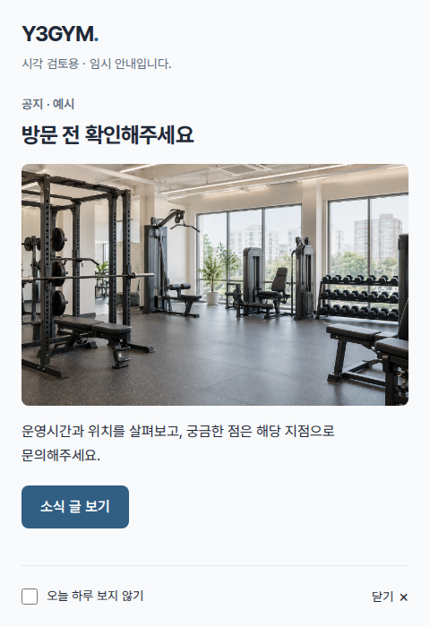
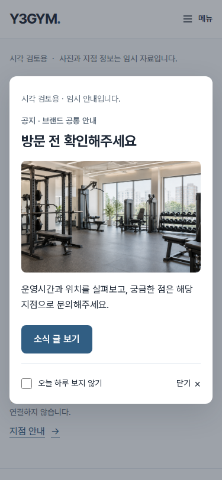

팝업과 상태별 화면 검수
홈 전체 확인 이후의 정적 프로토타입입니다. 사진·주소·연락처·소식은 모두 임시 예시이며 실제 서비스는 연결하지 않았습니다.
기본 예시는 본점과 예시점 두 지점입니다. PC는 별도 창, 모바일은 같은 페이지의 레이어 팝업을 사용합니다. PC 자동 열기가 차단되어도 수동 진입이 가능하면 정상 대응입니다. 자동 검수와 사용자 시각 확인은 구분합니다.
현재 팝업은 사용자 확인을 받았습니다. 지점 통합 탭 배치도 사용자 확인을 받았습니다. 현재 홈에는 지점·시설 미리보기만 남기고 트레이너·위치·문의 상세를 별도 지점 안내 페이지로 옮겼습니다.
홈의 지점·시설 통합 슬라이드 관련 최신 검수는 8개 검수 그룹에서 확인합니다. 이전 전체 팝업 검수와 개수를 합산하지 않습니다.
직접 확인
- 두 지점 기본 홈 — 모바일 레이어는 여기서 확인
- PC용 팝업 문서 직접 보기
- 두 지점 — 공통 정보와 지점별 문의
- 빈 데이터 — 선택 구역 숨김과 소식 안내
- 홈 사진 모의 실패
- 지점 안내 사진·지도 모의 실패
- 별도 지점 안내 — 예시점
- 자동 검수 결과
팝업 캡처




짧은 모바일 화면 · 320×480 · 본문 내부 스크롤

승인 당시 두 지점 홈 캡처
- 첫 화면: PC 1440×900 · 모바일 375×812
- 본점 선택 전체: PC · 모바일
- 예시점 선택 전체: PC · 모바일


상태별 캡처
- 수동 진입 안내: PC 자동 차단 후 · 모바일 소식의 링크
- 지점 안내 페이지 · 예시점 선택 상태: PC · 모바일
- 지점별 문의: PC · 모바일
- 지점 안내 페이지 · 빈 데이터: PC · 모바일
- 지점 안내 페이지 · 실패 상태: PC · 모바일
- JavaScript 비활성 — 모바일